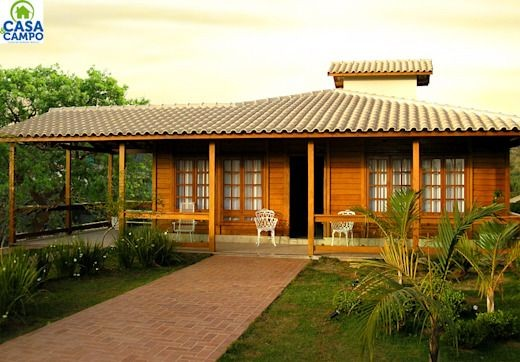
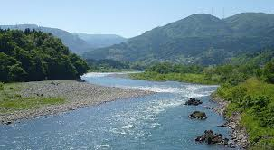
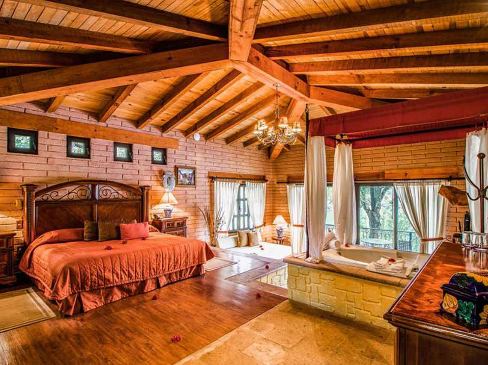

Proyecto cabaña
 El origen de donde venimos marca la diferencia y te lleva a generar buenas
cosas en su lugar natal,mi abuela tiene un sueño muy productivo que esta
en tener su propia casa en su lugar natal, se que ella ha invertido demasiado en tener,
ele lugar, es algo que beneficiara su descanso en los proximos años,ella es originaria de
veracruz, es un poco dificil que ella se transporte alla por lo que se sera algo dificil
para terminar su cabaña en ese lugar ademas por tener algunas personas que han estado
ayudando a construir su sueño y el mio. Es un proyecto a mediano plazo pero se que con nuestro
esfuerzo se puede obtener
El origen de donde venimos marca la diferencia y te lleva a generar buenas
cosas en su lugar natal,mi abuela tiene un sueño muy productivo que esta
en tener su propia casa en su lugar natal, se que ella ha invertido demasiado en tener,
ele lugar, es algo que beneficiara su descanso en los proximos años,ella es originaria de
veracruz, es un poco dificil que ella se transporte alla por lo que se sera algo dificil
para terminar su cabaña en ese lugar ademas por tener algunas personas que han estado
ayudando a construir su sueño y el mio. Es un proyecto a mediano plazo pero se que con nuestro
esfuerzo se puede obtener
|
Proyecto |
Caracteristicas |
Ventajas y Desventajas |
- Construccion de cabaña
- Ter un pozo de reserva
- Panel solar
- Cultivo de papayas y platano
- Conytar con corral crianza
|
- Esta ubicada en una region tropical
- Cuenta con un rio en la zona
- Es un lugar donde se puede cultivar y criar
- Un lugar turistico
Cuenta con gratronomia y cultura maravillosa |
- Ventaja- Flora y fauna en toda la region
- Desventaja- Sus climas son muy extremos
- Ventaja-Eventos culturales y festividades
- Desventaja-Sin comunicacion
- Ventaja-Buen lugar para descansar e inspirarte
|
|

|

|

|